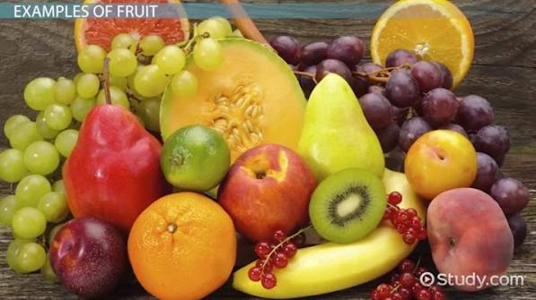

Botanically, a fruit is a mature ovary and its associated parts. It usually contains seeds, which have developed from the enclosed ovule after fertilization, although development without fertilization, called parthenocarpy, is known, for example, in bananas. Fertilization induces various changes in a flower: the anthers and stigma wither, the petals drop off, and the sepals may be shed or undergo modifications; the ovary enlarges, and the ovules develop into seeds, each containing an embryo plant. The principal purpose of the fruit is the protection and dissemination of the seed.